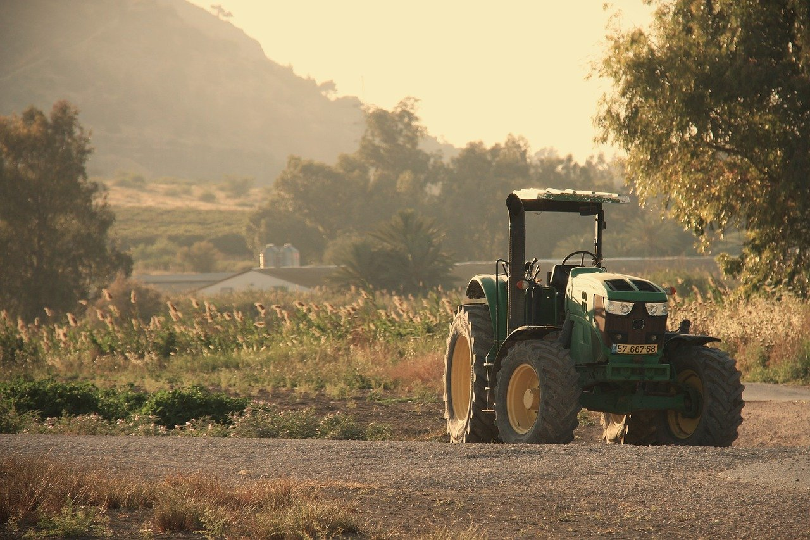
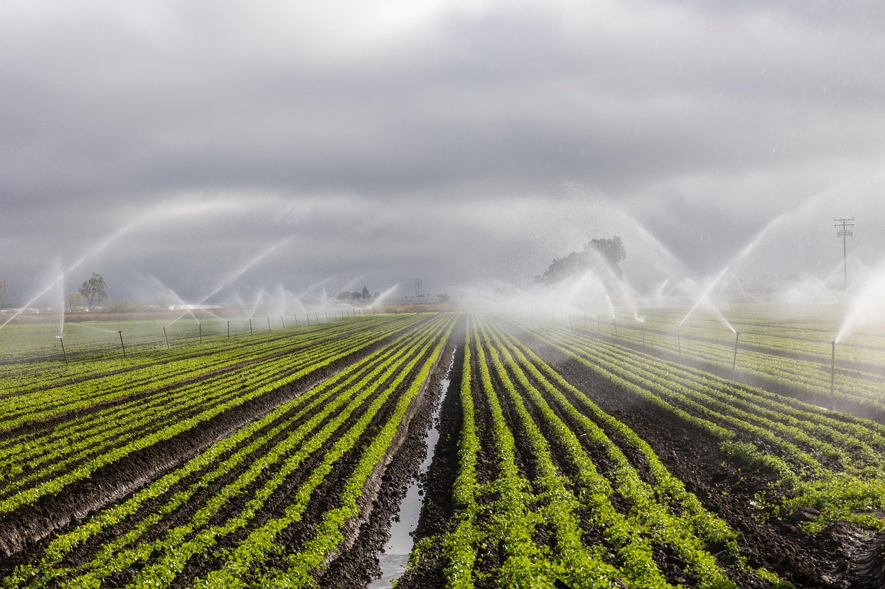

Explore how AI and machine learning are transforming soil analysis and crop management in Rwanda, improving yields and promoting sustainable agriculture.
Read More →

Exploring sustainable construction techniques and materials suited for East Africa's changing climate conditions.
Read More →

How AI and data-driven geotechnical models improve soil analysis and infrastructure resilience in Rwanda.
Read More →

How AI-based monitoring enhances safety and predictive maintenance of bridges and buildings across Africa.
Read More →

Exploring eco-friendly construction materials driving sustainable urban growth in Rwanda and beyond.
Read More →

How smart irrigation powered by AI and IoT helps farmers improve yield and conserve water.
Read More →

How AI image recognition tools help farmers detect plant diseases early and protect harvests.
Read More →
Stay Updated
Want to learn more about AI in engineering and agriculture? Get in touch to collaborate or discuss innovative solutions.
Contact Me